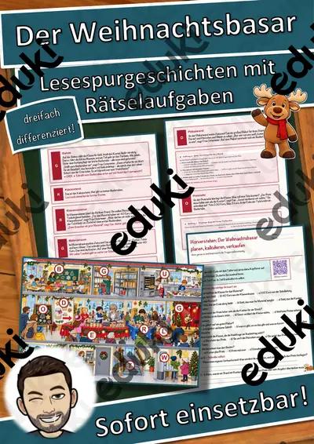
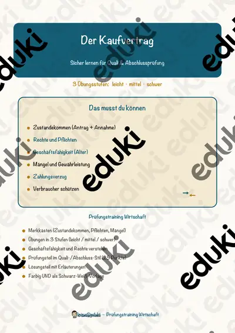
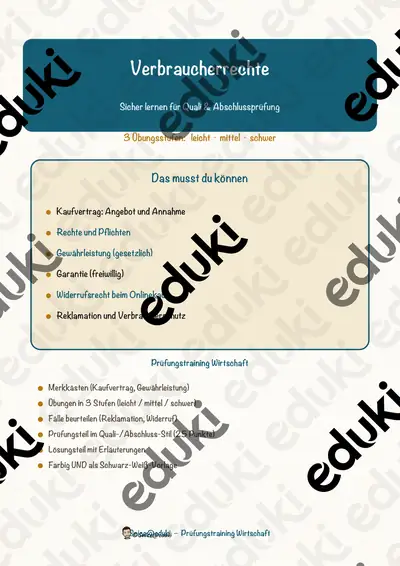
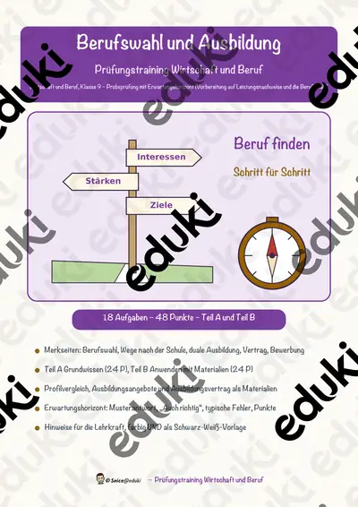
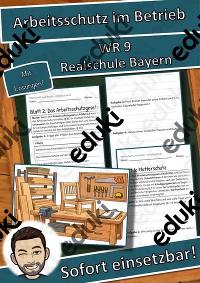
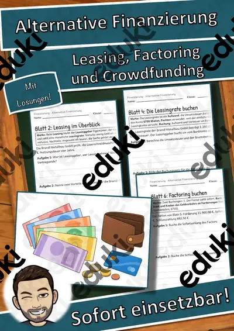

Die erste Steuererklärung – Lohnsteuer, Werbungskosten und Erstattung – Lesespurgeschichte mit Rätselaufgaben (Klasse 10)

Die Schuldenfalle – Ratenkauf, Handyvertrag und Zahlpause – Lesespurgeschichte mit Rätselaufgaben (Klasse 9)

Der Mietvertrag – die erste eigene Wohnung – Lesespurgeschichte mit Rätselaufgaben (Klasse 9)

Markt und Preis – Angebot und Nachfrage am Christbaummarkt – Lesespurgeschichte mit Rätselaufgaben (Klasse 9)

Der Weihnachtsbasar – planen, kalkulieren, verkaufen – Lesespurgeschichte mit Rätselaufgaben (Klasse 6)

Taschengeld – mein Geld klug einteilen – Lesespurgeschichte mit Rätselaufgaben (Klasse 3)

Der Flohmarkt – Lesespurgeschichte mit Rätselaufgaben (Klasse 7)

Der Zukunftstag – Lesespurgeschichte mit Rätselaufgaben (Klasse 8)

Die Bank – Lesespurgeschichte mit Rätselaufgaben (Klasse 8)

Die soziale Marktwirtschaft – Prüfungstraining Wirtschaft (Klasse 9)

Die Inflation – Prüfungstraining Wirtschaft (Klasse 9)

Der Kaufvertrag – Prüfungstraining Wirtschaft (Klasse 9)

Die Sozialversicherung – Prüfungstraining Sozialkunde (Klasse 9)

Die Globalisierung – Prüfungstraining Wirtschaft (Klasse 10)

Verbraucherrechte – Prüfungstraining Wirtschaft (Klasse 9)

Berufswahl und Ausbildung – Prüfungstraining Wirtschaft (Klasse 9)

Der Wirtschaftskreislauf – Prüfungstraining Wirtschaft (Klasse 9)

Geld und Zahlungsverkehr – Prüfungstraining Wirtschaft (Klasse 9)

Konsum und Werbung – Prüfungstraining Wirtschaft (Klasse 8)

Angebot und Nachfrage – Prüfungstraining Wirtschaft (Klasse 9)

Vom Rohstoff zum Produkt – Arbeitsheft mit Lösungen (BwR 7, Realschule Bayern)

Betriebe im Überblick – Arbeitsheft mit Lösungen (BwR 7, Realschule Bayern)

Arbeitsschutz – Arbeitsheft mit Lösungen (WR 9, Realschule Bayern)

Vorsorge fürs Alter – Arbeitsheft mit Lösungen (WR 9, Realschule Bayern)

Mitbestimmung im Betrieb – Arbeitsheft mit Lösungen (WR 9, Realschule Bayern)

Gebote und Verbote: Rechte und Pflichten im Alltag – Arbeitsheft mit Lösungen (WR 8/9, Realschule)

Gutschrift im Verkauf: Rücksendungen buchen – Arbeitsheft mit Lösungen (BwR 8, Realschule Bayern)

Alternative Finanzierung – Arbeitsheft mit Lösungen (BwR 9, Realschule Bayern)

Kreditkosten vergleichen – Arbeitsheft mit Lösungen (BwR 9, Realschule Bayern)

Aufbauorganisation – Arbeitsheft mit Lösungen (BwR 9, Realschule Bayern)
Keine Materialien gefunden – versuch einen anderen Suchbegriff oder Filter.
Wirtschaft im Alltag der Jugendlichen
Wirtschaftsunterricht gelingt, wenn die Beispiele aus dem Leben der Klasse stammen: Taschengeld, Handyvertrag, Ausbildungsplatz. Die Lesespuren dieser Seite setzen genau dort an, erklären Begriffe in Geschichten und lassen die Klasse Entscheidungen begründen.
Klasse 3 bis 7: Erste Erfahrungen
Der Einstieg erfolgt über „Taschengeld“ in der Grundschule und „Der Weihnachtsbasar“ in Klasse 6. In Klasse 7 gibt es „Der Flohmarkt“ als Beispiel für Angebot und Nachfrage, dazu „Ausbildungsvertrag Basics“, „Verhalten im Betrieb“ und „Arbeitsschutz & Jugendarbeitsschutzgesetz“.
Klasse 8 und 9: Geld, Markt, Schulden
Mit „Die Bank“, „Konsum und Werbung“ und „Der Zukunftstag“ beginnt Klasse 8. In Klasse 9 liegt der Schwerpunkt: „Die Schuldenfalle“, „Der Mietvertrag“, „Markt und Preis“, „Die soziale Marktwirtschaft“ und „Die Inflation“. Hier bringen die Lesespuren Begriffe mit praktischen Entscheidungen zusammen.
Klasse 10: Steuer und Globalisierung
Zum Abschluss stehen „Die erste Steuererklärung“ und „Die Globalisierung“ bereit. Prüfungstrainings fassen die wichtigsten Begriffe vor Klassenarbeiten und Abschlussprüfungen zusammen.
Für Lehrkräfte mit wenig Wirtschaftsstunden
Das Fach ist an vielen Schulen unterbesetzt. Die Materialien sind deshalb so aufgebaut, dass sie auch fachfremd unterrichtet werden können: Alle Fachbegriffe stehen im Text, die Lösungen sind vollständig.
Aufgaben aus der Lebenswelt
Die Aufgaben gehen von Fragen aus, die Jugendliche tatsächlich stellen: Was darf mein Ausbildungsbetrieb verlangen? Wie entsteht ein Preis? Warum sind Schulden gefährlich? Auf diese Weise bleibt der Unterricht nah an der Lebenswelt, ohne den Stoff zu verwässern.
Verbindung zu anderen Fächern
Wirtschaftsthemen berühren Mathematik, Deutsch und Politik. Prozentrechnung beim Preisvergleich, Vertragstexte lesen, Verbraucherrechte kennen: Mit den Lesespuren lassen sich solche Brücken schlagen, ohne eine eigene Unterrichtsreihe neu zu planen.
Praktisch ist außerdem, dass sich einzelne Lesespuren zu einer Wochenarbeit bündeln lassen, bei der die Klasse Station für Station ein Thema wie Haushaltsplanung oder Ausbildungsvertrag durchdringt und am Ende gemeinsam auswertet.
Häufige Fragen
Gibt es Material zur Berufsorientierung?
Ja, etwa „Ausbildungsvertrag Basics“, „Verhalten im Betrieb“ und „Arbeitsschutz & Jugendarbeitsschutzgesetz“. Weiteres steht bei Arbeitslehre.
Sind die Materialien für die Berufsschule geeignet?
Einige wenige ja. Der überwiegende Teil richtet sich an die Sekundarstufe I.
Wie aktuell sind Steuer- und Mietthemen?
Sie erklären Grundprinzipien. Konkrete Beträge und Fristen solltest du aktuell prüfen.
Gibt es Prüfungstrainings?
Ja, vor allem für Klasse 9 und 10.